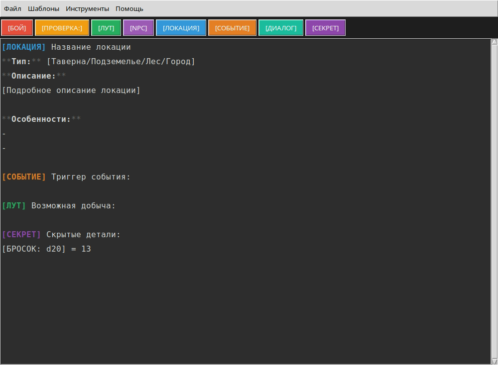
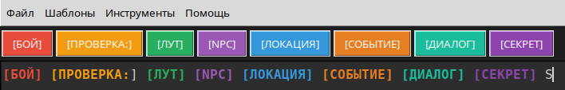
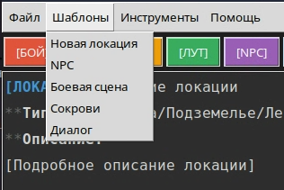
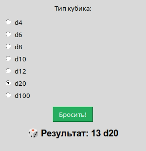
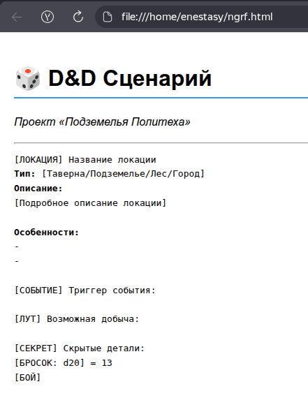

Специализированный редактор сценариев для мастеров подземелий
Инструмент для создания, структурирования и экспорта сценариев Dungeons & Dragons в рамках проекта «Подземелья Политеха» и партнёрства с издательством «Экивоки».
📖 Аннотация проекта
D&D Scenario Editor — это Python-приложение с графическим интерфейсом (tkinter), разработанное студентами группы 251-333 Московского Политеха. Редактор решает проблему хаотичного ведения заметок во время игровых сессий, предоставляя мастеру удобные инструменты для работы с локациями, NPC, боевыми сценами и диалогами.
Ключевая особенность — визуальная подсветка синтаксиса для D&D-тегов ([БОЙ], [ЛУТ], [NPC] и др.) и встроенный генератор бросков кубиков. Проект выполнен в период с февраля по май 2026 года.

⚡ Краткий обзор возможностей
Подсветка тегов
8 цветовых категорий для быстрого визуального поиска элементов сценария.

Шаблоны сцен
Готовые структуры для локаций, NPC, боёв и диалогов в один клик.

Броски кубиков
Встроенный рандомайзер d4–d100 с автоматической вставкой результата.

Экспорт в HTML
Конвертация сценария в веб-страницу для использования на стримах и шоу.
